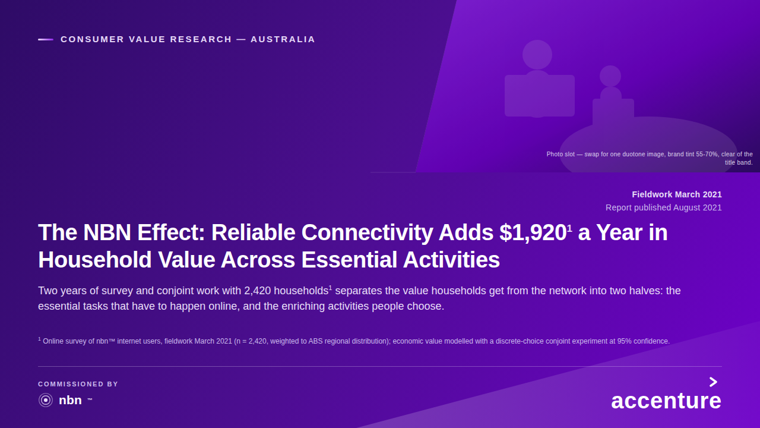
Full-bleed cover, firm mark bottom-right
cover
accenture__accenture_the_nbn_effect (cover p00) + kpmg__kpmg_kpmg_2021_ceo_outlook (cover p00 variant)
Buildable page templates extracted from visually-reviewed consulting decks and market-research reports. Each entry ships a self-contained HTML page on a 1280×720 stage and a build manual that says exactly how to fill and resize it.
101 templates · 50 layout families · extraction rules in TEMPLATE_SPEC.md · design rules in DESIGN_PLAYBOOK.md · every template cites its source pages
3 templates

cover
accenture__accenture_the_nbn_effect (cover p00) + kpmg__kpmg_kpmg_2021_ceo_outlook (cover p00 variant)
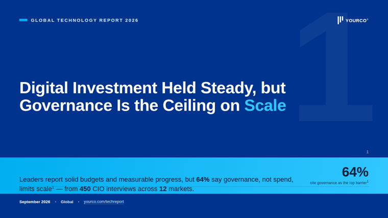
cover-standalone-band
KPMG Global Tech Report 2022 (kpmg__kpmg_kpmg_global_tech_report_2022_2022) cover p1 + Our Impact Plan 2023 cover p1; review kpmg__kpmg_kpmg_global_tech_report_2022_2022.md
titlekickerbandtextbandstatmetalockuppage
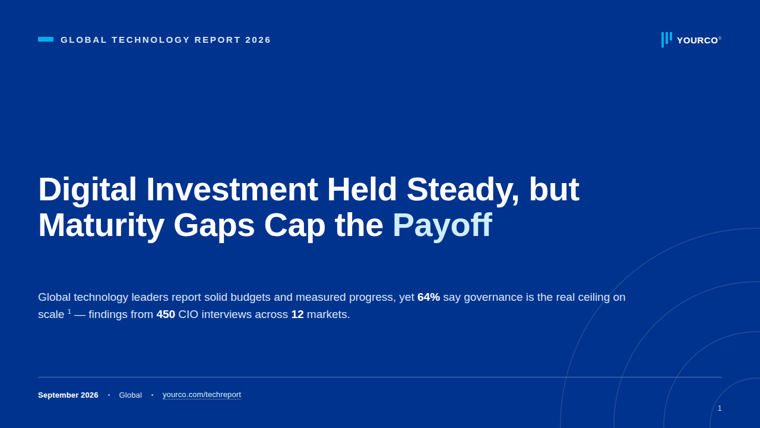
cover-standalone-flat
KPMG Global Tech Report 2022 (kpmg__kpmg_kpmg_global_tech_report_2022_2022) cover p1 + Our Impact Plan 2023 cover p1; review kpmg__kpmg_kpmg_global_tech_report_2022_2022.md
titlekickersubtitlemetalockuppage
2 templates
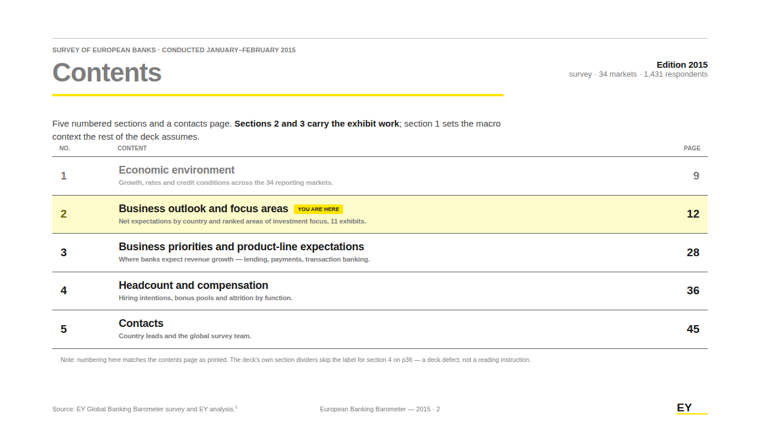
agenda-contents-ruleset
EY — European Banking Barometer 2015 (ey__ey_european_banking_barometer_2015_2015) Contents p2 — sw_pages/ey__ey_european_banking_barometer_2015_2015/pg-02.png + sw_sheets/ey__ey_european_banking_barometer_2015_2015_s00.jpg; reviews/ey__ey_european_banking_barometer_2015_2015.md (contents list + footer band); row-state device from reviews/deloitte__deloitte_accelerated_access_review_uk_mapping_2015.md
kickertitlebrand-rulemessageeditionrowsrow-numrow-title
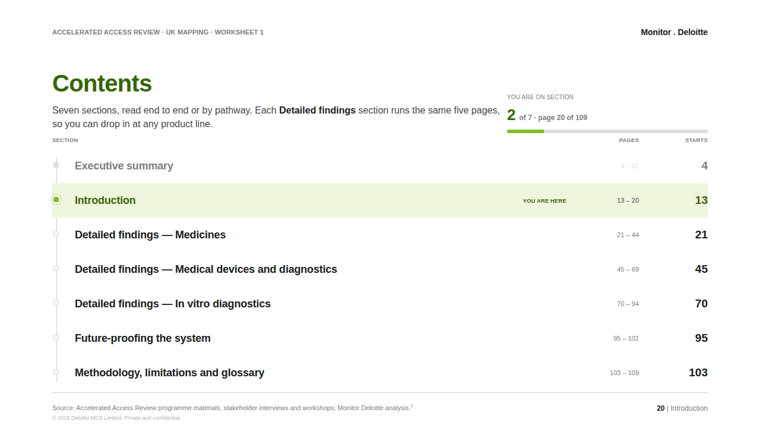
agenda-contents-tracker
Monitor Deloitte — Accelerated Access Review: UK Mapping (deloitte__deloitte_accelerated_access_review_uk_mapping_2015) Contents p3, reprinted p12/p20/p44/p69 — sw_pages/deloitte__deloitte_accelerated_access_review_uk_mapping_2015/pg-003.png + sw_sheets/deloitte__deloitte_accelerated_access_review_uk_mapping_2015_s00.jpg cell 3; reviews/deloitte__deloitte_accelerated_access_review_uk_mapping_2015.md (contents-as-section-tracker)
kickerbrandmarktitlemessageprogresssectionssection-labelsection-span
2 templates
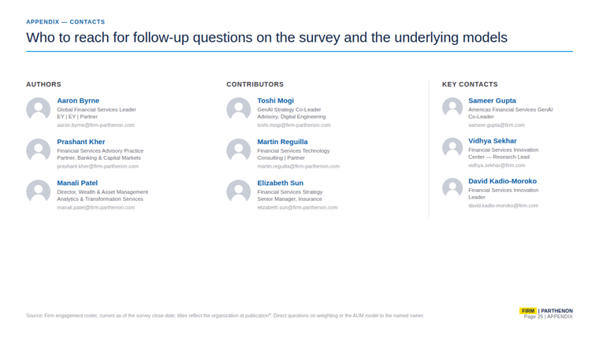
appendix-backmatter-contacts
ey__ey_generative_ai_in_wealth_and_asset_management_2024 p25 'Ernst & Young LLP contacts' (read on sw_sheets/ey__ey_generative_ai_in_wealth_and_asset_management_2024_s02.jpg row 1 frame 5); directory-roster variant ey__ey_european_banking_barometer_2015_2015 p46 (sheet _s04.jpg); palette + footer conventions from reviews/ey__ey_generative_ai_in_wealth_and_asset_management_2024.md §Color system
kickertitlegroup-1group-2group-3name (x9)role (x9)mail (x9)
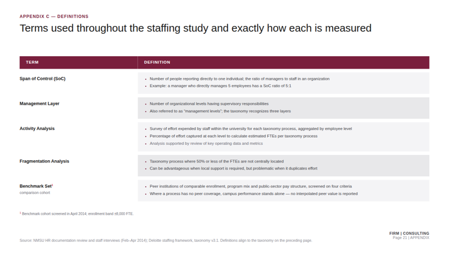
appendix-backmatter-definitions
deloitte__deloitte_new_mexico_state_university_staffing_study_opportun p21 'Key Definitions' (read on sw_sheets/deloitte__deloitte_new_mexico_state_university_staffing_study_opportun_s02.jpg row 3 frame 1); taxonomy context same deck p10; palette notes (blue+yellow data pair, red emphasis, maroon band observed on-sheet) from reviews/deloitte__deloitte_new_mexico_state_university_staffing_study_opportun.md §Color system
kickertitlecol-termcol-defterm (x5)sub-label (x1)definition-bullets (x5 rows)example-line
2 templates
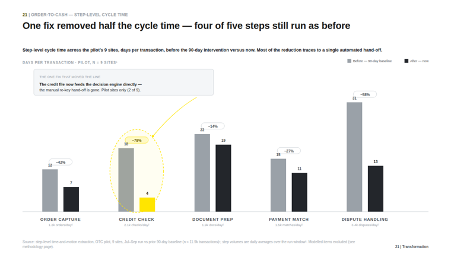
before-after-item-bars
ey__ey_ey_academic_resource_center_mission_2019 (p12–p21 before/after chart pairs + red-arrow correction device, recoloured to kit accent; sw_sheets/ey__ey_ey_academic_resource_center_mission_2019_s01.jpg p12 row1 col2; review ey__ey_ey_academic_resource_center_mission_2019.md); per-item paired bars: accenture NBN Effect p14 (review accenture__accenture_the_nbn_effect_how_the_nbn_network_adds_value_to_o.md)
kickertitleleadunit_notelegend_beforelegend_afteritem1_catitem1_sub
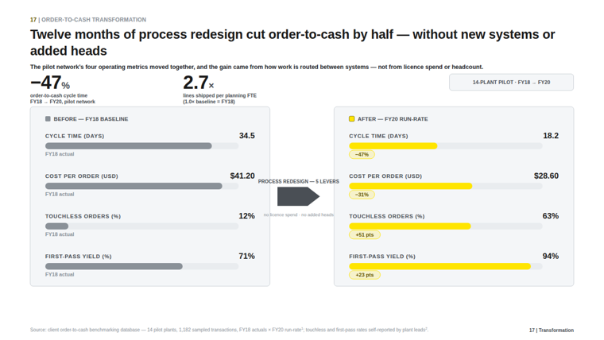
before-after-state-pair
ey__ey_ey_academic_resource_center_mission_2019 (p12–p21 before/after chart pairs; sw_sheets/ey__ey_ey_academic_resource_center_mission_2019_s01.jpg p12 row1 col2; review ey__ey_ey_academic_resource_center_mission_2019.md device 'before/after chart pair with red-arrow corrections'); two-number callout band: pwc_strategy__pwc_namibia_budget_on_a_plate_2019_2020_2019 p3 (sw_sheets/pwc_strategy__pwc_namibia_budget_on_a_plate_s00.jpg row1 col3)
kickertitleleadk1_numk1_capk2_numk2_capchip
2 templates
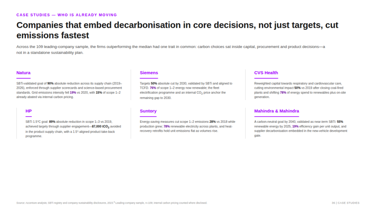
case-study-example-grid
accenture__accenture_accelerating_global_companies_toward_net_zero_by_2 p26 (sw_sheets/accenture__accenture_accelerating_global_companies_toward_net_zero_by_2_s02.jpg row 2 frame 1); count-variant kpmg__kpmg_kpmg_our_impact_plan_2022_update_2022 p19 (sw_sheets/kpmg__kpmg_kpmg_our_impact_plan_2022_update_2022_s01.jpg); palette reviews/accenture__accenture_accelerating_global_companies_toward_net_zero_by_2.md §Color system
eyebrowclaimledename (x6)body (x6)num-figureviolet-emphasis (x6)footnote-marker
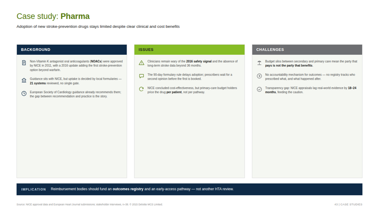
case-study-three-column
deloitte__deloitte_accelerated_access_review_uk_mapping_2015 p43/p67/p68 (sw_sheets/deloitte__deloitte_accelerated_access_review_uk_mapping_2015_s04.jpg row 2 frame 3; ..._s06.jpg row 2 frames 4-5); title-zone and kicker-bar facts reviews/deloitte__deloitte_accelerated_access_review_uk_mapping_2015.md
topicmessageband-backgroundband-issuesband-challengesitem-text (x9)icon (x9, inline svg)implication
2 templates
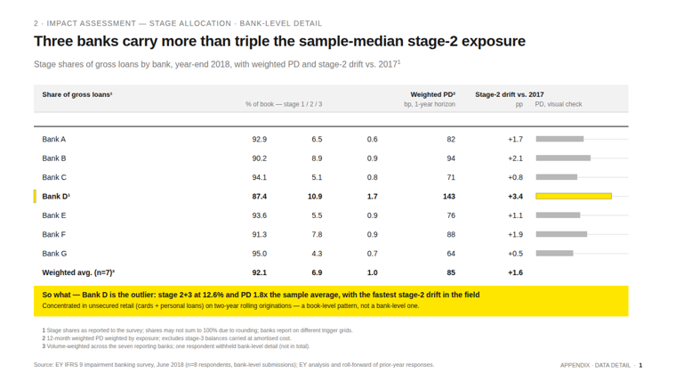
data-table-numeric-matrix
ey__ey_ey_ifrs_9_impairment_banking_survey_2018 p12 (bank-level data matrix; raw table; summary bars - viewed on sw_sheets/ey__ey_ey_ifrs_9_impairment_banking_survey_2018_s01.jpg row1 col2); secondary ey__ey_european_banking_barometer_2015_2015 p5 boxed crosstab, kpmg__kpmg_kpmg_our_impact_plan_2023 p23 grid+footnotes (s02). Colour rules: reviews/ey__ey_ey_ifrs_9_impairment_banking_survey_2018.md line 25 (two-colour yellow #FFE600 + grey), KPMG swap hexes from reviews/kpmg__kpmg_kpmg_our_impact_plan_2023.md lines 41-45. Screenshot qa/data-table-numeric-matrix.png (render clean, header collision fixed: drift-group caption anchored start x900).
kickertitle-claimclaim-subheader.group-captions(x3)header.col-captions(x4)row.label(x7)row.s1row.s2
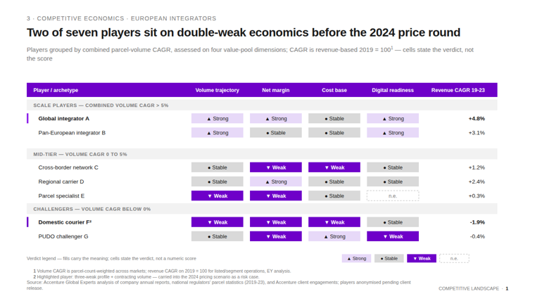
data-table-status-matrix
accenture__accenture_2023_post_parcel_industry_trends_2023 p10 (grouped heat-cell table with CAGR band headers + legend strip - viewed on sw_sheets/accenture__accenture_2023_post_parcel_industry_trends_2023_s00.jpg row1 col5; convention claims reviews/accenture__accenture_2023_post_parcel_industry_trends_2023.md item 7 + line 33 RAG-cells note). Deliberate deviation: source red/green cells -> single-accent #6E00C9 silence ramp (weak cells loudest), stated in index.html header + MANUAL. Secondary deloitte__deloitte_digital_transformation_2018 p7, ey__ey_ey_infrastructure_barometer_italy_2020 p8 (catalog). Screenshot qa/data-table-status-matrix.png.
kickertitle-claimclaim-subheader.col-captions(x6)band.caption(x3)row.label(x7)row.verdict-word(x4/row)row.verdict-fill(x4/row)
2 templates
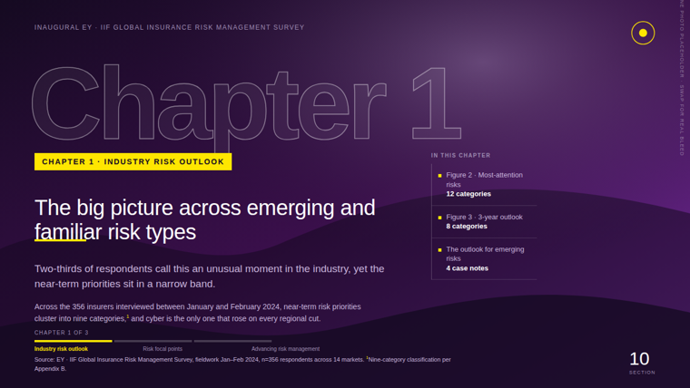
divider-section-outline
EY | IIF Global Insurance Risk Management Survey 2024 (ey__ey_risk_management_in_a_time_of_transformation_2024), chapter dividers p10/p17/p30 — p18 half-bleed form read in sw_sheets/ey__ey_risk_management_in_a_time_of_transformation_2024_s01.jpg; review ey__ey_risk_management_in_a_time_of_transformation_2024.md
furnitureeyebrowlockupkickertitletitlerulesubtitleintro
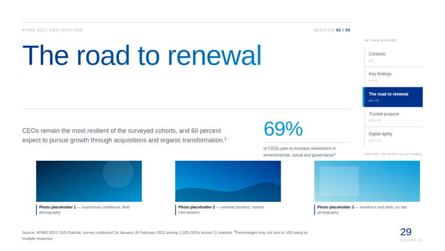
divider-section-tabrail
KPMG 2021 CEO Outlook (kpmg__kpmg_kpmg_kpmg_2021_ceo_outlook_2021) section dividers + rail, pages p1-p10 via sw_sheets/kpmg__kpmg_kpmg_kpmg_2021_ceo_outlook_2021_s00.jpg; opener + stat claim from KPMG 2020 CEO Outlook COVID-19 Special Edition p5 via sw_sheets/kpmg__kpmg_kpmg_kpmg_2020_ceo_outlook_covid_19_special_edition_2020_s00.jpg; reviews for both decks
titlesection_indexledestat_numeralstat_claimtilesrail_tabsrail_legend
2 templates
donut-claim-center
accenture__accenture_the_nbn_effect_how_the_nbn_network_adds_value_to_o p16 (sw_pages/accenture__accenture_the_nbn_effect_how_the_nbn_network_adds_value_to_o/pg-16.png; sheet sw_sheets/..._s01.jpg), donut-with-center-claim device p16/p21/p29 + NOTE/SOURCE footer contract + single-hue lightness-token palette from reviews/accenture__accenture_the_nbn_effect_how_the_nbn_network_adds_value_to_o.md; radial labels cross-checked against moneyball p24 (segment soup flagged, capped at 5); band violet #7500C0 sampled, ramp #8E24EA/#A45CF0/#D9C6F4/#E7D9F8 + grey #B8B8B8 cited from review
chipclaim_titleaccent_spancenter_overlinecenter_claimsegment-count-5ring_value-labelsradial-names
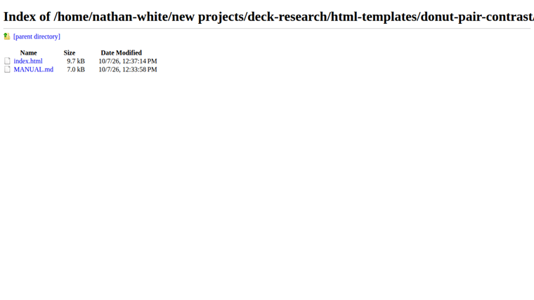
donut-pair-contrast
accenture__accenture_the_moneyball_moment_for_marketing_in_canada_2019 p23 (sw_pages/accenture__accenture_the_moneyball_moment_for_marketing_in_canada_2019/pg-23.png; sheet sw_sheets/..._s02.jpg), variant p10; signature-device list, red=highlight/black=comparison/grey=rest semantics and the p24 pie-soup ignore note from reviews/accenture__accenture_the_moneyball_moment_for_marketing_in_canada_2019.md; arc red #DC0017, title red #FF0000, ring grey #BFBFBF sampled from the source page
claim_titlered_clausesublineleft_valueright_valuegap_numeralgap_labelcaption_left
2 templates
dual-axis-combo-bar-line-fiscal
pwc_strategy__pwc_namibia_national_budget_2024_25_for_our_humanity_now_s_t p05/p06 (sheet s00, Interest Repayment); reviews/pwc_strategy__...md — palette § (crimson #C4172C–#D6006C, amber #F8C820 flag), dual-axis common (N$ left % right), fiscal-year axis qualifiers + footer convention (deck tag + month/page), triangle brand echo
kickertitlebrand_echorule_topbars_left_axisline_right_axisbar_value_labelsline_end_label
dual-axis-combo-column-line
kpmg__kpmg_venture_pulse_q3_2024_2024 p12/p13/p15 (sheet s01); reviews/kpmg__kpmg_venture_pulse_q3_2024_2024.md — palette § (cyan #00B8F6 measured), §Charts (column+line two axes, value labels), §71 (chart block + ~28-30% commentary column, legend row), §66 weaknesses (label-everywhere, dual-axis comparability) encoded as label-the-now + honesty rules
kickertitlenav_activerule_topbars_left_axisline_right_axisvalue_labelshighlight_bar
2 templates
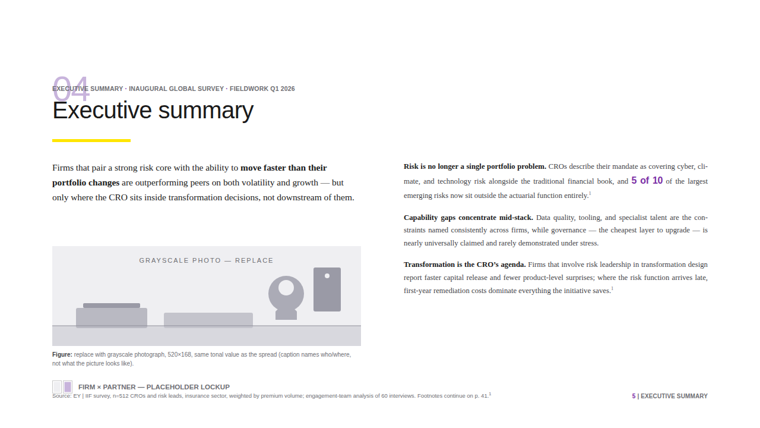
exec-summary-ataglance-editorial-spread
EY/IIF — ey__ey_risk_management_in_a_time_of_transformation_2024 (executive summary p4; sheet ey__ey_risk_management_in_a_time_of_transformation_2024_s00.jpg frame 4); palette hexes #FFE600/#7B2FA6/#4B1F7D/#C8B4DC/#6E6E73/#EFEFF2 from reviews/ey__ey_risk_management_in_a_time_of_transformation_2024.md; claim-first habit confirmed on takeaway pages p5-p9
chapter-nummicro-captiontitleleadphotofigure-captionbody-claimbody-paragraph
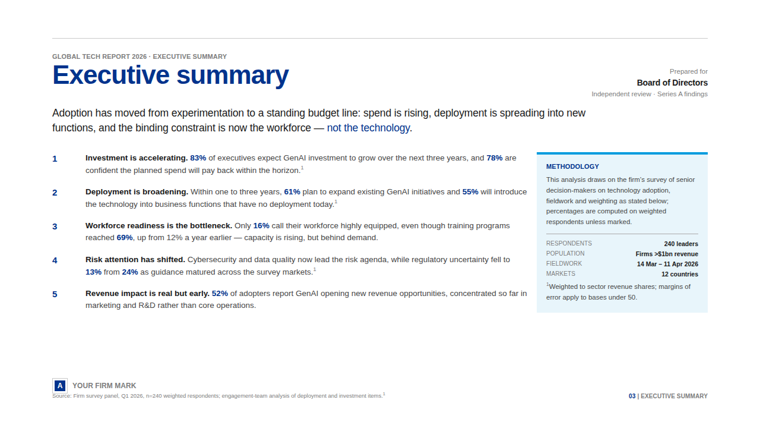
exec-summary-ataglance-findings-rail
KPMG — kpmg__kpmg_genai_survey_2024_key_insights_2024 (executive summary p2; sheet kpmg__kpmg_genai_survey_2024_key_insights_2024_s00.jpg frame 2); navy #00338D from reviews/kpmg__kpmg_kpmg_our_impact_plan_2024_update_2024.md, cyan #019cde from reviews/kpmg__kpmg_kpmg_2020_ceo_outlook_covid_19_special_edition_2020.md; font fact from reviews/kpmg__kpmg_genai_survey_2024_key_insights_2024.md
kickertitleeditionthesisfindingsfinding-leadfinding-statmethodology-prose
2 templates
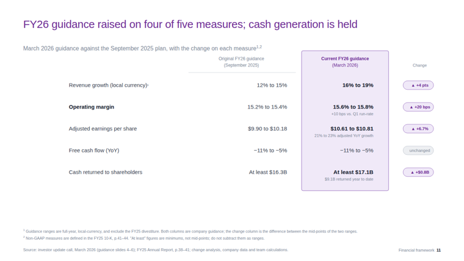
financial-table-guidance-bridge
Accenture Investor & Analyst Conference 2022 (accenture__accenture_accenture_investor_analyst_conference_2022) p11 'Continued Strong Momentum', read on sw_sheets/accenture__accenture_accenture_investor_analyst_conference_2022_s01.jpg (p11-p20 sheet; p11 = row 2 col 2), with the highlighted-column sibling device on p17; analysed in reviews/accenture__accenture_accenture_investor_analyst_conference_2022.md (architecture s1, palette semantics line 18, footnote/footer discipline line 12). Palette pixel-sampled (no hexes in the review), deepened for white stage, silver-gradient ground dropped to white. Verified by headless render.
titleclaim-subrows[].labelrows[].priorrows[].nowrows[].detailrows[].delta.dirrows[].delta.txt
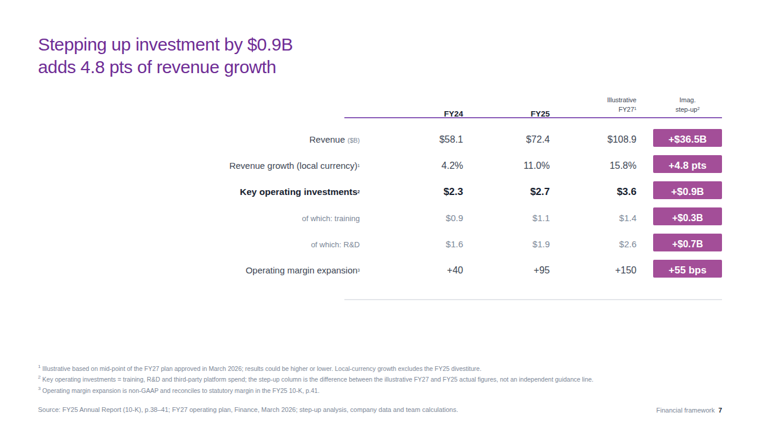
financial-table-step-up
Accenture Investor & Analyst Conference 2022 (accenture__accenture_accenture_investor_analyst_conference_2022) p2 and p3, read on sw_sheets/accenture__accenture_accenture_investor_analyst_conference_2022_s00.jpg (p1-p10 sheet; p2 = row 1 col 2, p3 = row 1 col 3) and p11/p17 variants on ..._s01.jpg; analysed in reviews/accenture__accenture_accenture_investor_analyst_conference_2022.md (architecture s1 'highlighted financial tables', palette line 18, footer discipline line 12). Review lists no hexes: palette sampled from the p2 render crop (violet ~rgb(147,116,192), magenta ~rgb(180,115,181), numerals ~rgb(16,22,38)) and deepened for the white stage; the deck's silver-gradient ground replaced by white. Verified by headless render.
titlerows[].labelrows[].arows[].brows[].crows[].boxrows[].boldfootnotes
2 templates
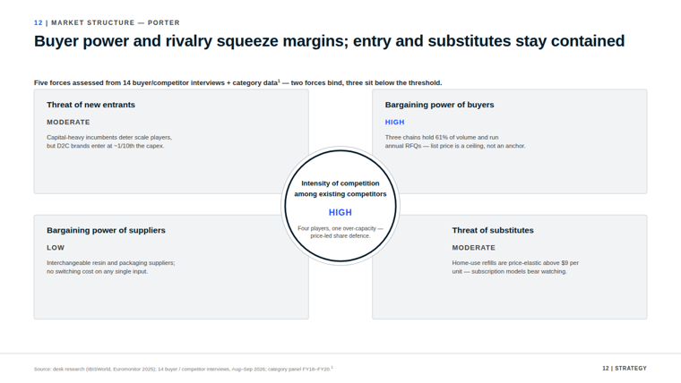
framework-named-five-forces
catalog_umbrex.csv S1765 "Template — Porter's Five Forces" — corpus/sheets/sheet_177.jpg (ceil(1765/10)=177, row 1 col 5); device rule reviews/umbrex_patterns.md §9 (four corners + central intensity, Low/moderate/high prompt lines); palette navy ~#1F2A65/#1F2A4F + grey fills per §palette line 29, highlight normalized to house --accent #2251FF
kickertitleleadforce-1force-2force-3force-4center
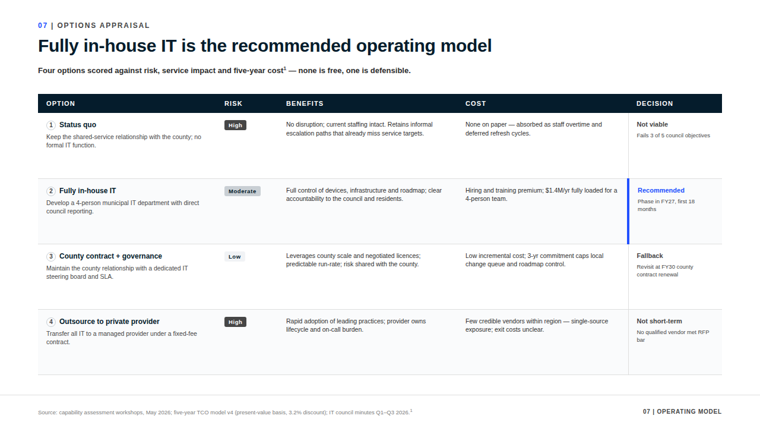
framework-named-option-scorecard
deloitte__deloitte_town_of_tillsonburg_it_strategic_review_council_upd p15 — sw_sheets/deloitte__deloitte_town_of_tillsonburg_it_strategic_review_council_upd_s01.jpg (floor(15/10)=1, row 1 col 5); device praised as deck's strongest in reviews/deloitte__deloitte_town_of_tillsonburg_it_strategic_review_council_upd.md §devices #4 + §palette (navy header band, zebra, semantic RAG); row discipline from pwc_strategy__pwc_pwc_annual_report_2018 p26 — sw_sheets/pwc_strategy__pwc_pwc_annual_report_2018_s02.jpg (row 1 col 5 = p25 offset), red/white zebra + bold actual/target per reviews/pwc_strategy__pwc_pwc_annual_report_2018.md §color (red ~#D60A2C normalized to house --accent #2251FF)
kickertitleleadcol-optcol-riskcol-bencol-costcol-dec
2 templates
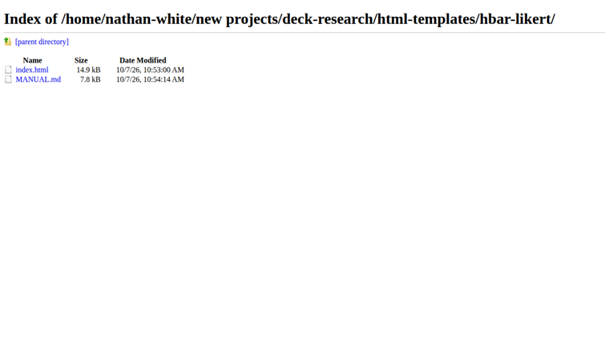
hbar-likert
accenture__accenture_2021_p_c_underwriting_survey_2021 (p19/p28, sheet s01)
kickertitlechart_rowspill_columnaxislegendnotefooter
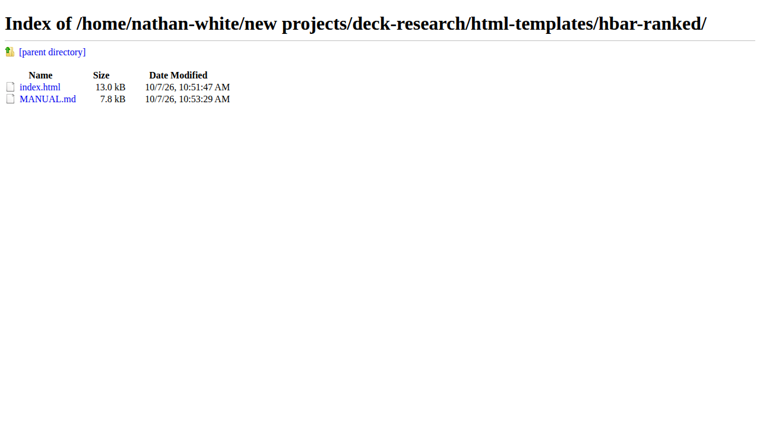
hbar-ranked
accenture__accenture_2021_p_c_underwriting_survey_2021 (p16, sheet s01); accenture__accenture_the_nbn_effect_how_the_nbn_network_adds_value_to_o (p10)
kickertitlechart_rowscalloutannot_raillegendremarksfooter
2 templates
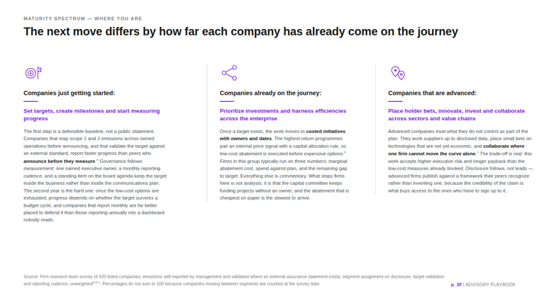
icon-column-advice-trio
accenture__accenture_accelerating_global_companies_toward_net_zero_by_2 p30 (maturity-spectrum advice; sw_sheets/accenture__accenture_accelerating_global_companies_toward_net_zero_by_2_s02.jpg row 2 frame 5), icon-row device p27-p28 (same sheet row 2 frames 2-3); palette hexes reviews/accenture__accenture_the_nbn_effect_how_the_nbn_network_adds_value_to_o.md + layout facts reviews/accenture__accenture_accelerating_global_companies_toward_net_zero_by_2.md
kickertitlelabel-1label-2label-3action-1action-2action-3
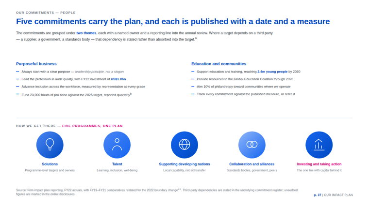
icon-column-medallion-rail
kpmg__kpmg_kpmg_our_impact_plan_2022_update_2022 p37 (Our commitments; sw_sheets/kpmg__kpmg_kpmg_our_impact_plan_2022_update_2022_s03.jpg row 2 frame 2) with recurring disc device p38-p39 (same sheet row 2 frames 3-4); palette hexes + title/rule habit reviews/kpmg__kpmg_kpmg_our_impact_plan_2022_update_2022.md
kickertitleleadh2-1h2-2b1-1b1-2b1-3
2 templates
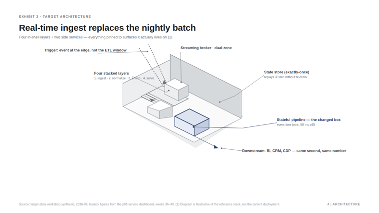
isometric-illustration-cutaway
Catalog S1009 (catalog_101-134.csv, technical-isometric-diagram) rendered on corpus/sheets/sheet_101.jpg frame 9 (sheet ceil(1009/10)=101, 5col x 2row row-major, frame 9 = row 2 col 4) — cutaway building with sun-ray lines and pinned labels (Solar PV @42°, thermal mass, cross ventilation); sibling S1476 (catalog_135-167.csv, diagram-isometric) on sheet_148.jpg frame 6. No reviews/*.md exists for either, so the palette is kit-default single accent #2E4374 + gray ramp (stated, not firm-evidenced); the source's multi-hue labels collapsed per DESIGN_PLAYBOOK. Verified by headless render.
kickertitlesubscene.features[].boxscene.features[].callscene.exit-arrowsource-linerunhead
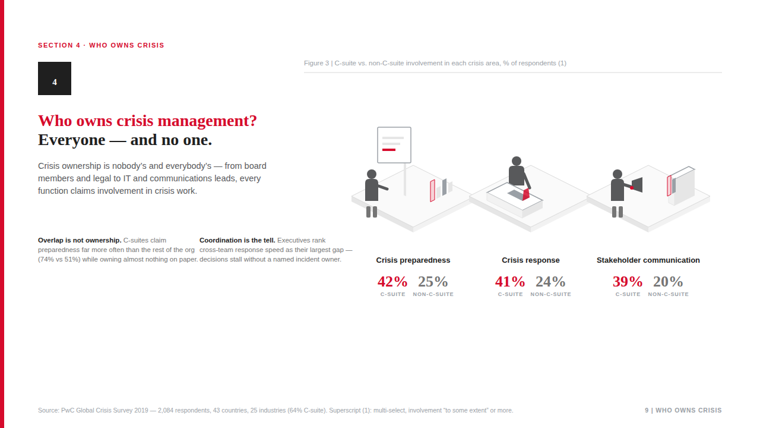
isometric-illustration-scene-trio
PwC Global Crisis Survey 2019 (pwc_strategy__pwc_crisis_preparedness_as_the_next_competitive_advantage_le) p09, read on sw_sheets/pwc_strategy__pwc_crisis_preparedness_as_the_next_competitive_advantage_le_s00.jpg (sheet floor(09/10)=s00, 5col x 2row row-major, p09 = row 2 col 4; p08 = row 2 col 3); analysed in reviews/pwc_strategy__pwc_crisis_preparedness_as_the_next_competitive_advantage_le.md lines 14/17/72 (numbered chapters, Fig 5 split 42/25/41/24/39/20%, isometric 3D + percentage callouts flagged as infographic). Palette red #E30613/#E1251B per review line 54, rendered as #D60A2C; the deck's orange chrome collapsed to gray per DESIGN_PLAYBOOK one-accent rule. Verified by headless render.
kickernumeraltitle-redtitle-inkleadcommentary[2]figure-linenode[].scene
2 templates
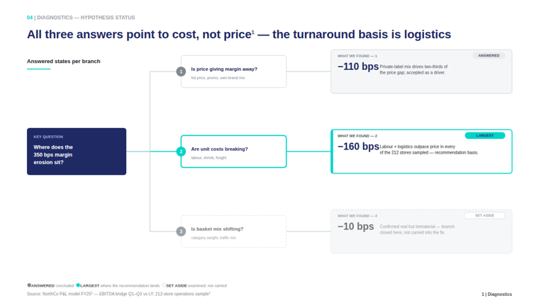
issue-tree-answers
Umbrex template deck S1752 'Hypothesis Tree', read in corpus/sheets/sheet_176.jpg (row 1, panel 2): side-leaf boxes widened into answer panels; discipline from reviews/umbrex_patterns.md §4 + palette line
kickertitleleadroot-labelroot-qbranch-1-qbranch-1-notebranch-2-q
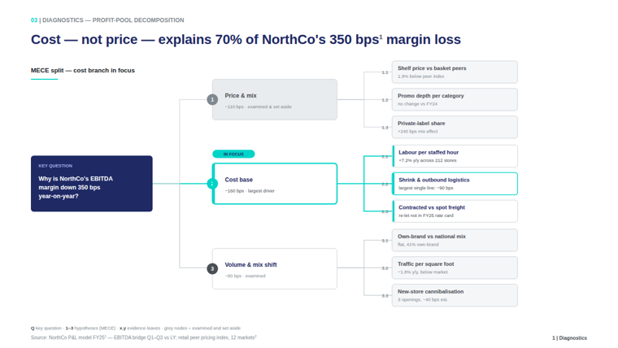
issue-tree-hypothesis
Umbrex template deck S1753 'Issue Tree' + S1752 variant, read in corpus/sheets/sheet_176.jpg (row 1, panels 2-3); reviews/umbrex_patterns.md §4 (tree discipline) + house palette (navy #1F2A65 / teal #00D4C8 / cornflower #6E93C4)
kickertitleleadroot-labelroot-qbranch-1-hbranch-1-notebranch-2-h
2 templates
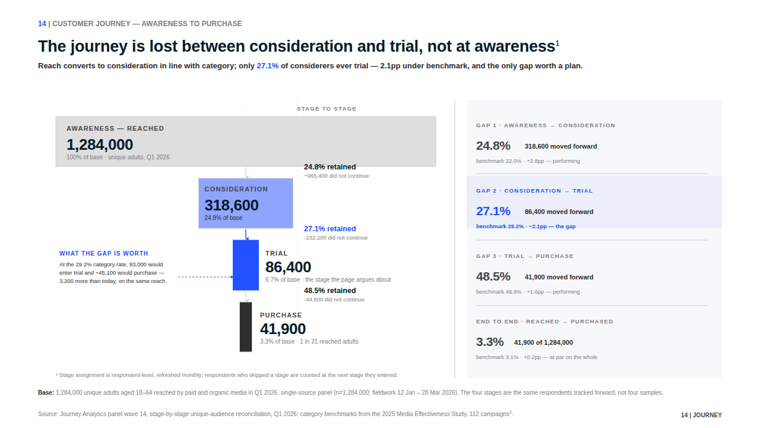
journey-conversion-funnel
Accenture, 'Accelerating global companies toward net zero by 2050', p39 (G2000 sample cascade: stacked stage-definition boxes each with its own n=, drop-off counts off the spine, one stage recoloured) read on sw_sheets/accenture__accenture_accelerating_global_companies_toward_net_zero_by_2_s03.jpg (sheet index floor(39/10)=3, 5col x 2row row-major -> row 2 col 4); funnel/callout-arrow corroboration from catalog S0018 (corpus/sheets/sheet_002.jpg frame 8), S0257 (corpus/sheets/sheet_026.jpg), S0266 (corpus/sheets/sheet_027.jpg); palette is the kit default per DESIGN_PLAYBOOK line 57 (#051C2C ink, #2251FF single accent, grey ramp 2D2D2D/464646/7D7D7D/DEDEDE) — the source deck's purple/violet gradient deliberately not ported; review analyzed: reviews/accenture__accenture_accelerating_global_companies_toward_net_zero_by_2.md (single-hue colour system, footnote/sample-size rigor); Verified by headless render.
kickertitleleadstageName1stageValue1stageSub1stageName2stageValue2
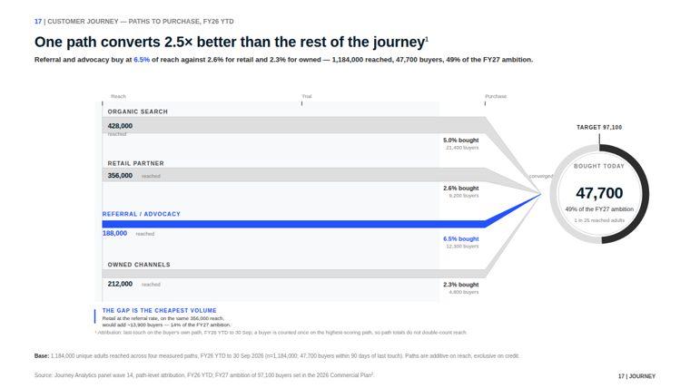
journey-lanes-to-target
PwC Strategy&, 'Global Entertainment & Media Outlook 2023-2027, Hong Kong summary', p28 (two-zone band-over-column device, small direct labels, white convergence arrows; magenta->orange gradient bands deliberately dropped) read on sw_sheets/pwc_strategy__pwc_global_entertainment_media_outlook_2023_2027_hong_kong_s_s02.jpg (sheet index floor(28/10)=2, 5col x 2row row-major); funnel-to-target ring form factor from catalog S0266 (corpus/sheets/sheet_027.jpg frame 6, 'funnel arrows into target ring') with S0018 (corpus/sheets/sheet_002.jpg frame 8) and S0257 (corpus/sheets/sheet_026.jpg); Accenture net-zero p39 read on sw_sheets/accenture__accenture_accelerating_global_companies_toward_net_zero_by_2_s03.jpg for stage-cascade context; palette is the kit default per DESIGN_PLAYBOOK line 57 (no hexes listed for this page type in the reviews); Verified by headless render.
kickertitleleadstageAxislaneName1laneValue1laneUnit1laneRate1
2 templates
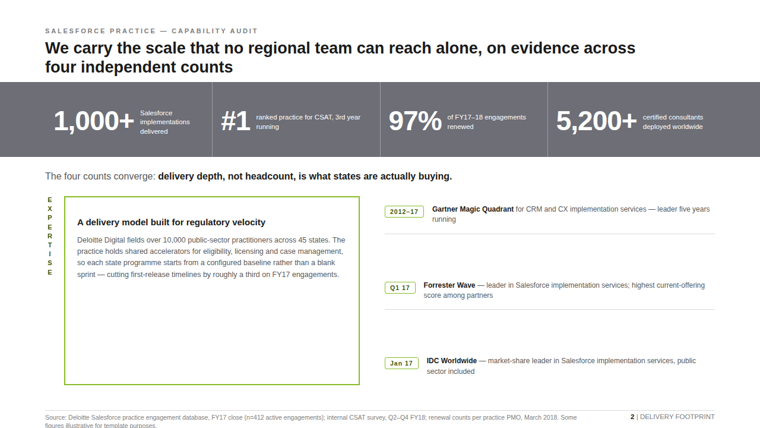
kpi-numerals-band
deloitte__deloitte_digital_transformation_2018 p2 (sw_sheets/deloitte__deloitte_digital_transformation_2018_s00.jpg row0/col1)
kickertitlenum-1num-2num-3num-4cap-1cap-2
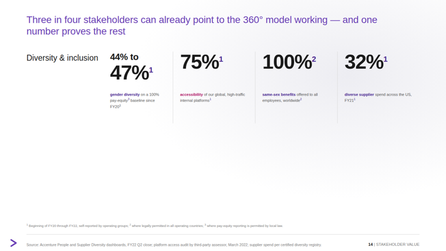
kpi-numerals-hero
accenture__accenture_accenture_investor_analyst_conference_2022 p14-p16 (sw_sheets/accenture__accenture_accenture_investor_analyst_conference_2022_s01.jpg row0/col3-4, row1/col0)
titlesectionnum-1num-2num-3num-4cap-1cap-2
2 templates
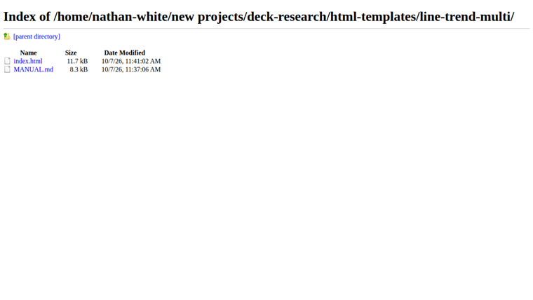
line-trend-multi
kpmg__kpmg_venture_pulse_q3_2024_2024 p8/p9/p24 (sheet s00 row 2; review §4 palette + §5 end-label line convention); corroborated pwc_strategy__pwc_23rd_annual_global_ceo_survey_navigating_the_rising_tide p07 + pwc_strategy__pwc_21st_ceo_survey_the_anxious_optimist_in_the_corner_offic p03 (sheet s00)
kickertitlenav_activerule_topseries_focusseries_contextvalue_labels_endforecast_leg
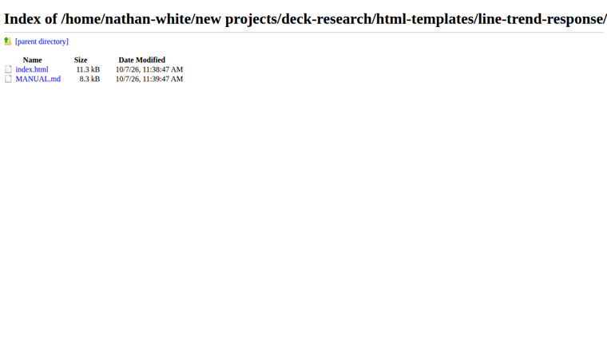
line-trend-response
accenture__accenture_the_moneyball_moment_for_marketing_in_canada_2019 p18/p19 (sheet s01 rows 2-3; review §10 response-curve+annotation, §chart discipline honest-tagging, red/black/grey encoding)
kickertitletag_illustrativeaxeszone_bandthreshold_vlinespillslinear_reference
2 templates
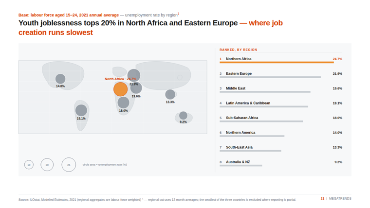
map-geo-bubble-rail
pwc_strategy__pwc_five_global_shifts_reshaping_the_world_we_live_in_2022 (p21 'Megatrends: Social instability', read on sw_sheets/pwc_strategy__pwc_five_global_shifts_reshaping_the_world_we_live_in_2022_s02.jpg row 1 frame 1); pattern cross-check pwc_strategy__pwc_copernicus_market_report_2019 p14 (map + charts on one evidence band)
kickertitlemarkers[8].labelmarkers[8].vfocus-idrail-rank (x8)rail-name (x8)rail-value (x8)
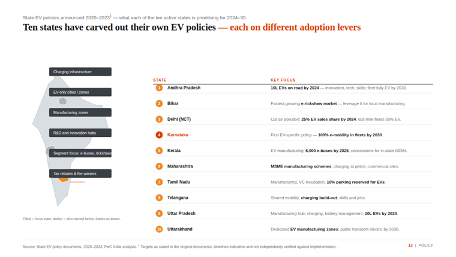
map-geo-highlight-table
pwc_strategy__pwc_e_mobility_in_india_market_paradigms_and_ways_to_play_20 (p11, read on sw_sheets/pwc_strategy__pwc_e_mobility_in_india_market_paradigms_and_ways_to_play_20_s01.jpg row 1 frame 2 — grey India map, 6 dark lever callout bars, 10-row State|Key Focus table with orange disc badges)
kickertitleregion-highlight (accent)region-named (x2, mid-grey)lever-bars[6].labelfocus-marker-leadertable-head-statetable-head-focus
2 templates
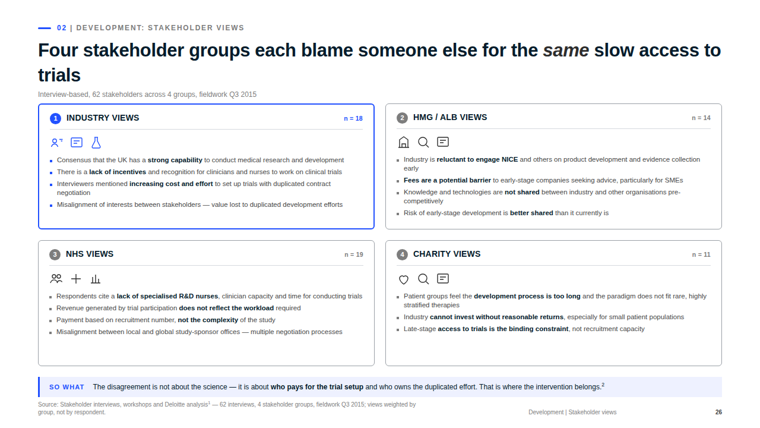
matrix-2x2-panels
Deloitte Accelerated Access Review, UK mapping (2015) p26/p31/p36/p41/p50 — sw_pages/deloitte__deloitte_accelerated_access_review_uk_mapping_2015/pg-026.png, reviews/deloitte__deloitte_accelerated_access_review_uk_mapping_2015.md; negative reference PwC Boardroom Agenda 2022 p35
kickertitledeck-tag-linepanelscard-1card-1-chipcard-1-titlecard-1-count
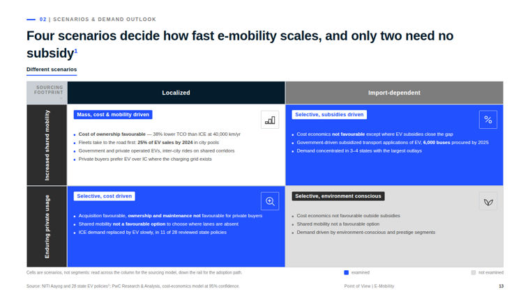
matrix-2x2-scenario
PwC Point of View: E-Mobility in India, market paradigms and ways to play (ACMA 2021) p13 — sw_pages/pwc_strategy__pwc_e_mobility_in_india_market_paradigms_and_ways_to_play_20/pg-13.png, reviews/pwc_strategy__pwc_e_mobility_in_india_market_paradigms_and_ways_to_play_20.md; frame convention reviews/umbrex_patterns.md S1765-70
kickertitlelead-inmatrixaxis-namecol-1col-2row-1
2 templates
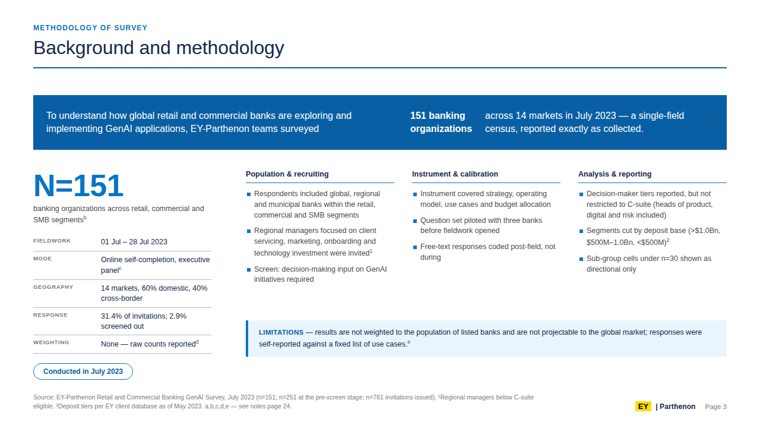
methodology-fieldwork-rail
ey__ey_generative_ai_in_retail_and_commercial_banking_2023 (p3 'Background and methodology', sheet sw_sheets/ey__ey_generative_ai_in_retail_and_commercial_banking_2023_s00.jpg frame 3); limitation-line device from ey__ey_study_initial_coin_offerings_icos_the_class_of_2017_on p12; palette/source conventions from reviews/ey__ey_generative_ai_in_retail_and_commercial_banking_2023.md
kickertitlecalloutn-figuren-captionfield-fieldworkfield-modefield-geography
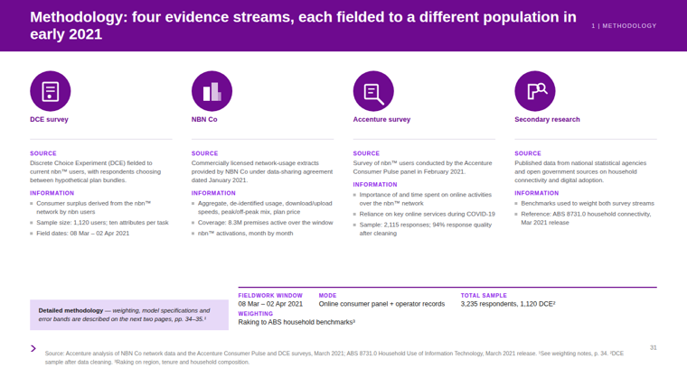
methodology-source-columns
accenture__accenture_the_nbn_effect_how_the_nbn_network_adds_value_to_o (p30/p31 methodology-iconrow, sheet sw_sheets/accenture__accenture_the_nbn_effect_how_the_nbn_network_adds_value_to_o_s03.jpg); palette + footer contract from reviews/accenture__accenture_the_nbn_effect_how_the_nbn_network_adds_value_to_o.md §Color system
titlerunning-headsrc-caption-1..4src-source-1..4src-bullets-1..4inset-pointerfield-windowfield-mode
2 templates
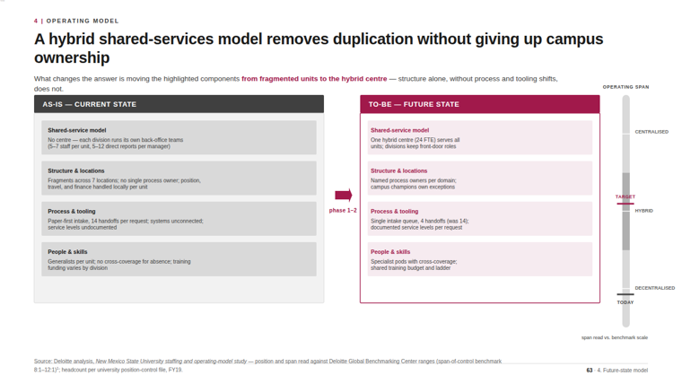
model-diagram-asis-tobe
Deloitte New Mexico State University staffing study - as-is vs future-state operating model spread (reviews/deloitte__deloitte_new_mexico_state_university_staffing_study_opportun.md archetype item 9; sw_sheets/deloitte__deloitte_new_mexico_state_university_staffing_study_opportun_s0*.jpg)
kickertitleleadpanel-cap (x2)row-head (x8)row-body (x8)rail-scale (x3)rail-today
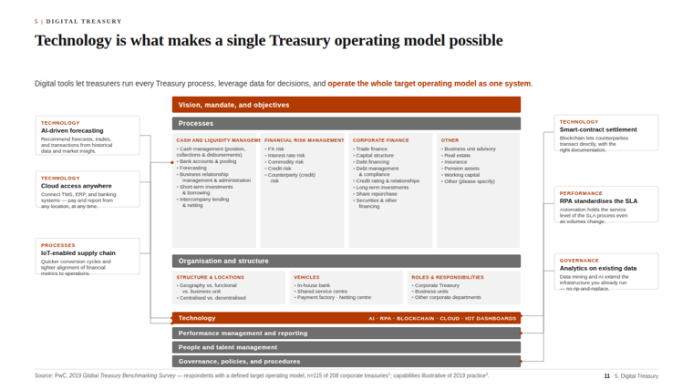
model-diagram-tom-stack
PwC Strategy 2019 Global Treasury Benchmarking Survey p11 (sw_sheets/pwc_strategy__pwc_2019_global_treasury_benchmarking_survey_2019_s01.jpg row1 col1; reviews/pwc_strategy__pwc_2019_global_treasury_benchmarking_survey_2019.md reusable item 7 'TOM nested box tree with margin callouts')
kickertitleleadband-visionband-processesband-organisationband-technologyband-performance
2 templates
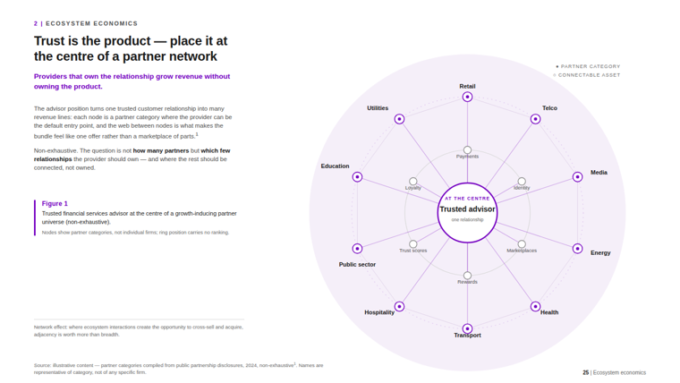
org-hub-map-network
accenture__accenture_2019_accenture_global_financial_services_consumer p25 — sw_sheets/accenture__accenture_2019_accenture_global_financial_services_consumer__s02.jpg (row 1, col 5); palette pixel-sampled from that crop (violet #7500C1, deep #460074, white ground), system confirmed by reviews/accenture__accenture_2019_accenture_global_financial_services_consumer_.md §color/§type
kickertitleleadbodyfig-tagfig-capfig-subfnote
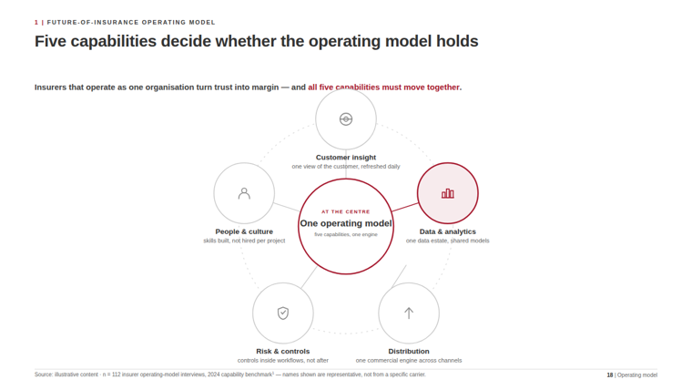
org-hub-map-orbit
pwc_strategy__pwc_insurance_reimagined_spotlight_on_trust_convergence_and p18 — sw_sheets/pwc_strategy__pwc_insurance_reimagined_spotlight_on_trust_convergence_and__s01.jpg (row 2); palette cited from reviews/pwc_strategy__pwc_insurance_reimagined_spotlight_on_trust_convergence_and_.md §color (PwC red ≈#A6192E, greys #D9D9D9/#8C8C8C/#404040, white ground, body #333)
kickertitleleadhubsat-Nsat-1sat-2sat-3
2 templates
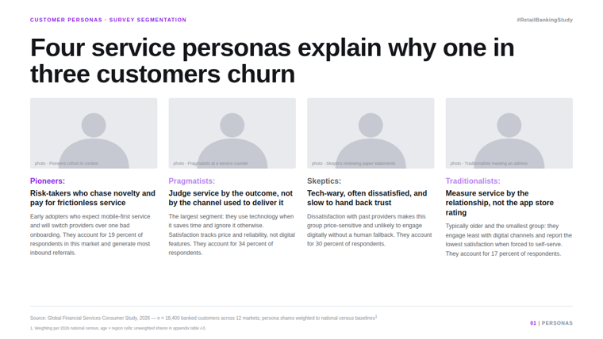
persona-intro-grid
accenture__accenture_2019_accenture_global_financial_services_consumer (p8; sw_sheets/accenture__accenture_2019_accenture_global_financial_services_consumer__s00.jpg row 2 col 3); review accenture__accenture_2019_accenture_global_financial_services_consumer_.md
kickerhashtagtitlephoto1name1claim1body1photo2
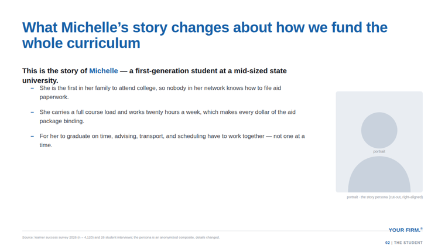
persona-narrative
catalog S0036 (corpus/sheets/sheet_004.jpg row 2 col 1; catalog_1-20.csv persona-narrative line, Gartner-type page, no review file)
titleleadstory1story2story3portraitportrait_captionlockup
2 templates
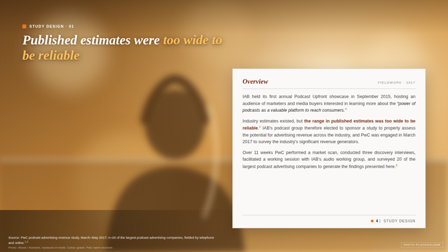
photo-bleed-narrative-overlay
pwc_strategy__pwc_iab_podcast_ad_revenue_study_an_analysis_of_the_largest__ p04 (sw_sheets/pwc_strategy__pwc_iab_podcast_ad_revenue_study_an_analysis_of_the_largest__s00.jpg tile 4); palette + typography reviews/pwc_strategy__pwc_iab_podcast_ad_revenue_study_an_analysis_of_the_largest_.md
kickertitlepanel_headpanel_labelpara_1para_2para_3source_line
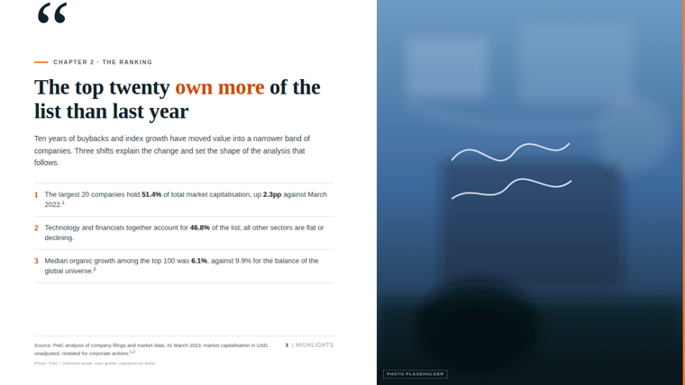
photo-bleed-split-divider
pwc_strategy__pwc_global_top_100_companies_by_market_capitalisation_2023 p03 (sw_sheets/pwc_strategy__pwc_global_top_100_companies_by_market_capitalisation_2023_s00.jpg tile 3), geometry + measured hexes + weakness notes reviews/pwc_strategy__pwc_global_top_100_companies_by_market_capitalisation_2023.md
glyphkickertitleleadpoint_1point_2point_3point_fig(x3)
2 templates
process-flow-pathway
deloitte__deloitte_accelerated_access_review_uk_mapping_2015 p16 (sw_sheets/deloitte__deloitte_accelerated_access_review_uk_mapping_2015_s01.jpg cell labeled p16 — swimlane node network + milestone circles w/ dashed drop-lines + per-stage duration arrows + 4-stage chevron band); reviews/deloitte__deloitte_accelerated_access_review_uk_mapping_2015.md (title-zone style, deck-wide stage-colour semantics; deck paints one hue per stage, kit collapses to one accent #86BC25, same brand anchor as sibling agenda-contents-tracker)
kickertitleleadlanesnodeslinks_accentmilestonesdurations
process-flow-stage-matrix
accenture__accenture_2023_post_parcel_industry_trends_2023 p17 (sw_sheets/accenture__accenture_2023_post_parcel_industry_trends_2023_s01.jpg cell labeled p17 — chevron journey band over 3 icon swim-rows, bold quantitative bottom-right insight); reviews/accenture__accenture_2023_post_parcel_industry_trends_2023.md (claim title + magenta sub-claim, 1-hue-family discipline; kit keeps one hue #5B1B8A deepened for text contrast + one lightness #C9B3E6)
kickertitlesubclaimstagesrowlabrowsubchain_nodeshops
2 templates
pyramid-tiers-levels
corpus levels-pyramid family TEMPLATE_HARVEST.json pyramid-tiers exemplars S0259/S0260/S0264/S0269 (catalog_21-62.csv: 5-tier pyramid + text, corporate-to-operational tiers, white label per tier); source images resolve to Bing photo pages (sheet_026/027 [bing:benchmarking]) - reconstructed from catalog description + kit rules; screenshots qa/pv_levels.png
kickertitleleadtier-1..5.band-name(x1)tier-1..5.row-nametier-1..5.row-desc(x2 lines)tier-1..5.metriczone-label(STRATEGIC/TACTICAL/OPERATIONAL)
pyramid-tiers-value
Gartner services-transformation page, corpus slide S0034, read on corpus/sheets/sheet_004.jpg frame 4 (row 1 col 4); catalog row catalog_1-20.csv S0034 (blue+amber centered three-tier pyramid, white labels); recoloured to one accent + grey ramp per kit rule; screenshots qa/pv_value.png
kickertitleleadtier-1.label(x2)tier-1.note(kick/title/body)tier-2.label(x2)tier-2.note(kick/title/body)tier-3.label(x2)
2 templates
quote-pull-bubble-cluster
deloitte__deloitte_accelerated_access_review_uk_mapping_2015 p25 (measured on sw_sheets/deloitte__deloitte_accelerated_access_review_uk_mapping_2015_s02.jpg tile 5), identical geometry p30; semantic stakeholder-colour system and chevron strip per reviews/deloitte__deloitte_accelerated_access_review_uk_mapping_2015.md §color system / §archetypes #5
titlemessage_linechevron_strippanel_fieldpanel_captionbubble_text_x9bubble_speakerspeaker_pair
quote-pull-claim-rail
accenture__accenture_2019_accenture_global_financial_services_consumer p28 (measured on sw_sheets/accenture__accenture_2019_accenture_global_financial_services_consumer__s02.jpg tile 8), same grammar p31/p35/p41/p48; devices + palette anchors (violet #6E00C9-#7B1FF0, deep #3C0A80-#4B0E8F) per reviews/accenture__accenture_the_nbn_effect_how_the_nbn_network_adds_value_to_o.md and reviews/accenture__accenture_2019_accenture_global_financial_services_consumer_.md §recurring devices
kickerhashtagclaim_linequote_textattributionevidence_1evidence_2figure_tag
2 templates
quote-visual-humor-quote-over-still
Catalog S1089 (catalog_101-134.csv row 90: content, 'quote-slide', charts none, typography 'bold-italic-quote-center', colour 'blur-bokeh-photo-bg', layout 'full-bleed-photo-with-center-quote', device 'quote over movie still'), image corpus/images3/slideuplift_0025_91a72c04.jpg (2400x1200, kind bing in slides_manifest.json — a web reference, not a firm page; sibling S1092 is the title-slide variant of the same device). No firm attribution and no reviews/*.md, so the palette is kit-default one hue #1F7CCE with its light lightness #79B6EE on dark ground and a grayscale photo ramp; the 2:1 source frame was re-derived to 16:9 with the quote block centred on y=402. Verified by headless render.
kickerquote[2 lines, 3 at 46px]rule (accent)attributioncaption / still creditpage-stampfirm-markstill.placeholder-swap
quote-visual-humor-still-checks
Catalog S0009 (catalog_1-20.csv row 10: content, 'humor text plus still', charts none, typography 'blue checkmark callouts', layout 'photo left; checks right', device 'movie still joke slide'), rendered from corpus/pdfpages/4890_49c9_a1ee_77b0f75a86c7_St_-09.png (also frame 9 of corpus/sheets/sheet_001.jpg) — a Firms Mazars / 'forvs mazars' page 9 with the (c) 2020 line bottom-right. No reviews/*.md exists for this deck, so the single accent hue was measured off the frame itself (mean RGB of blue callout pixels 31,124,206 = #1F7CCE), not invented; the photo region (x 0-756, y 176-628) and check column (x 836-1216, tops 206/306/426) were measured with a pixel-occupancy scan. Verified by headless render.
kickertitle[2 lines]still.creditstill.placeholder-swapcheck[].lead[1-2 lines]check[].subsource-linepage-stamp
2 templates
recommendation-driver-map
deloitte__deloitte_town_of_tillsonburg_it_strategic_review_council_upd p8 (drivers -> recommendations boxed table, row labels mirror p6 drivers -> findings), rating-cell discipline p15, totals rule p12/p13 (read on sw_sheets/deloitte__deloitte_town_of_tillsonburg_it_strategic_review_council_upd_s00.jpg sheet 0); catalog_1-20.csv S0057 recommendation page; palette registers + semantic traffic-light rule from reviews/deloitte__deloitte_town_of_tillsonburg_it_strategic_review_council_upd.md (hexes unpublished, flagged by DESIGN_PLAYBOOK)
kickertitleleaddriver-4driver-metric-4finding-4recommendation-4owner-4
recommendation-numbered
deloitte__deloitte_accelerated_access_review_uk_mapping_2015 p11 (12 numbered discs, 2 re-coloured green as priorities, evidence-base lead-in, two-part grey footer; read on sw_sheets/deloitte__deloitte_accelerated_access_review_uk_mapping_2015_s01.jpg sheet 1); EY conclusion-checklist sibling ey__ey_risk_management_in_a_time_of_transformation_2024 p38; title-gate and topic-title anti-pattern rulings from reviews/deloitte__deloitte_town_of_tillsonburg_it_strategic_review_council_upd.md
kickertitleleadlegenditem-1item-2item-3item-4
2 templates
risk-opportunity-heat-lattice
kpmg__kpmg_kpmg_2022_ceo_outlook_2022 p5 (numbered risk list w/ one value numeral per item, one hue, Source: line — sw_sheets/kpmg__kpmg_kpmg_2022_ceo_outlook_2022_s00.jpg row1col5) + kpmg__kpmg_genai_survey_2024_key_insights_2024 p9 (ranked risk bars over gray with numerals — sw_sheets/kpmg__kpmg_genai_survey_2024_key_insights_2024_s00.jpg) + pwc_strategy__pwc_boardroom_agenda_2022 p26 (risks/opportunities across horizons — sw_sheets/pwc_strategy__pwc_boardroom_agenda_2022_s02.jpg); palette reviews/kpmg__kpmg_kpmg_2022_ceo_outlook_2022.md (#243CE4 / #002478 / grays) + reviews/pwc_strategy__pwc_boardroom_agenda_2022.md (decorative-colour failure => semantic grey ramp only)
kickertitlestrip.fig1strip.fig2strip.fig3leadgrid.cellband.rect
risk-opportunity-paired-bracket
kpmg__kpmg_kpmg_2022_ceo_outlook_2022 p5 (ranked risk list, one value numeral per item, single brand blue, Source: line — sw_sheets/kpmg__kpmg_kpmg_2022_ceo_outlook_2022_s00.jpg row1col5) + kpmg__kpmg_genai_survey_2024_key_insights_2024 p9 (risk ranking as ranked bars over gray tracks with in-bar numerals — sw_sheets/kpmg__kpmg_genai_survey_2024_key_insights_2024_s00.jpg) + pwc_strategy__pwc_boardroom_agenda_2022 p26 (numbered blocks whose copy names risks/opportunities across horizons — sw_sheets/pwc_strategy__pwc_boardroom_agenda_2022_s02.jpg); palette reviews/kpmg__kpmg_kpmg_2022_ceo_outlook_2022.md (#243CE4 / #002478 / grays) and reviews/pwc_strategy__pwc_boardroom_agenda_2022.md (its 'colour is decorative, not semantic' finding is the semantic-colour DON'T rationale)
kickertitlestrip.fig1strip.fig2strip.fig3hdr.riskhdr.leverhdr.opp
2 templates
scatter-bubble-before-after-arrows
firm: accenture__accenture_the_nbn_effect_how_the_nbn_network_adds_value_to_o p13 right panel (before/now circle pairs with dashed transfer arrows, signed per-item delta labels, axis break) via sw_sheets/accenture__accenture_the_nbn_effect_how_the_nbn_network_adds_value_to_o_s01.jpg + reviews/accenture__accenture_the_nbn_effect_how_the_nbn_network_adds_value_to_o.md
band_titlesub_kickersub_linelegend_pairsize_keypairpair_namepair_delta
scatter-bubble-quadrant-cluster
firm: accenture__accenture_the_nbn_effect_how_the_nbn_network_adds_value_to_o p13 (bubble scatter, dashed time-saving-essentials region, dashed leader callout, gray/violet series ramp, 1M reference circle) via sw_sheets/accenture__accenture_the_nbn_effect_how_the_nbn_network_adds_value_to_o_s01.jpg + reviews/accenture__accenture_the_nbn_effect_how_the_nbn_network_adds_value_to_o.md
band_titlesub_kickersub_linelegend_catsize_keyseriespointinline_label
2 templates
scenario-forecast-scenario-fan
PwC Strategy&, Copernicus Market Report 2019 p86 (sw_sheets/pwc_strategy__pwc_copernicus_market_report_2019_s08.jpg row1 col2 — long-horizon line projections, blue+grey) and Strategy& EV Sales Review Q4 2022 p16 (sw_sheets/pwc_strategy__strategy_electric_vehicle_sales_review_q4_2022_2023_s01.jpg row2 col2 — wide forecast panel, F-suffixed years, single arrowed callout). Palette anchors per reviews/pwc_strategy__pwc_copernicus_market_report_2019.md (same #1F3864/#1E5A90 stack, grey ramp for alternatives). Verified by headless chromium render.
kickertitlehistSeriesupSeriesbaseSeriesdownSeriesupEndbaseEnd
scenario-forecast-split-line
PwC Strategy&, Copernicus Market Report 2019 p24 (sw_sheets/pwc_strategy__pwc_copernicus_market_report_2019_s02.jpg row1 col5 — blue line + grey area, left text / right chart, dashed-border CAGR callout) and p86 (s08.jpg row1 col2 — line to 2037, 2-line title); Strategy& EV Sales Review Q4 2022 p16 (sw_sheets/pwc_strategy__strategy_electric_vehicle_sales_review_q4_2022_2023_s01.jpg row2 col2 — F-suffixed forecast years, one arrowed % callout). Palette anchors sampled per reviews/pwc_strategy__pwc_copernicus_market_report_2019.md (navy #1F3864, mid-blue #1E5A90, light blue #A8C8E8, two-hue discipline). Verified by headless chromium render.
kickertitleleadpoint1point2point3calloutNcalloutD
2 templates
sketch-checklist-doodle-list
corpus S0042 (Gartner conference material, 2017) via catalog_1-20.csv; rendered corpus/sheets/sheet_005.jpg
kickertitlefigureitemssourcepage
sketch-checklist-equation
PwC/Mayer Brown "Merging with a SPAC" p15 (review pwc_strategy__pwc_merging_with_a_spac_preparing_for_life_as_a_public_compa_slides.csv p15; review.md p14-29)
kickertitlenodesoperatorssourcepage
2 templates
small-multiples-region-bars
pwc_strategy__pwc_23rd_annual_global_ceo_survey_navigating_the_rising_tide p15/p17 (sw_sheets/pwc_strategy__pwc_23rd_annual_global_ceo_survey_navigating_the_rising_tide_s01.jpg); exhibit-6 forms + question-sidebar + negative-space bar labels per reviews/pwc_strategy__pwc_23rd_annual_global_ceo_survey_navigating_the_rising_tide.md §forms/§axis; orange hexes #F08300/#ED8B28/#D93F00 from that review
kickertitlepanel-titles-1-8focus-category-barscontext-barsbar-value-labelsquestion-sidebarsource
small-multiples-year-panels
kpmg__kpmg_pulse_of_fintech_h1_21_2021 p07/p12 (sw_sheets/kpmg__kpmg_pulse_of_fintech_h1_21_2021_s00.jpg); 2x3 annual small-multiples, current-year accent device, values-on-bars and shared-legend fix per reviews/kpmg__kpmg_pulse_of_fintech_h1_21_2021.md §charts; palette #90278E purple + #D1D3D4 grays per §palette
kickertitlelegendpanel-titles-1-6panel-sublinesyear-labelsbar-columns-6x4bar-value-labels
2 templates
stacked-share-100col
accenture__accenture_2023_post_parcel_industry_trends_2023 (p11, sheet s01 row 1 col 1); palette/footer/legend contract from accenture__accenture_the_nbn_effect…p07 (s00 row 2); reviews for both decks
kickertitlechart_columnsshift_bandlegendbase_notesourcepageno
stacked-share-bars
accenture__accenture_2021_p_c_underwriting_survey_2021 (p8/p9 profile by segment, sheet s00; cross-tab p15, s01); reviews accenture__accenture_2021_p_c_underwriting_survey_2021.md + …nbn_effect…md (lightness tokens, grey-reserved rule)
kickertitlelegendchart_barsrow_labelscallout_railremarksbase_note
2 templates
stat-callout-list-cards
PwC Boardroom Agenda 2022 (pwc_strategy__pwc_boardroom_agenda_2022) p1 + p24; sw_sheets/pwc_strategy__pwc_boardroom_agenda_2022_s00.jpg + _s02.jpg; review pwc_strategy__pwc_boardroom_agenda_2022.md
eyebrowclaimcard.ckcard.figcard.unitcard.sensowhatctx
stat-callout-list-kpmg-rail
KPMG Our Impact Plan 2024 Update (kpmg__kpmg_kpmg_our_impact_plan_2024_update_2024) p27 + p32; sw_sheets/kpmg__kpmg_kpmg_our_impact_plan_2024_update_2024_s02.jpg; review kpmg__kpmg_kpmg_our_impact_plan_2024_update_2024.md
kickerclaimleadpointsmethodcallout.figcallout.unitcallout.lab
2 templates
survey-question-exhibit-battery-matrix
accenture__accenture_2019_accenture_global_financial_services_consumer p23 lower half / p34 / p55 via sw_sheets/accenture__accenture_2019_accenture_global_financial_services_consumer__s02.jpg and reviews/...consumer_.md line 37 ('percentage matrix tables with colored column bars'); matrix + claim-bearing 'Figure N' caption + Source/footnote furniture from pwc_strategy__pwc_navigating_the_payments_matrix_charting_a_course_amid_ev Figure 8 p20-p22 read on sw_sheets/pwc_strategy__pwc_navigating_the_payments_matrix_charting_a_course_amid_ev_s02.jpg, convention and hexes (#D9105A/#F7A11D/#9AA0A6) from reviews/pwc_strategy__pwc_navigating_the_payments_matrix_charting_a_course_amid_ev.md sections 4-5
kicker-stemtitle-claimlead-linefigure-captioncolumns[4].labelrows[6].qrows[6].textrows[6].v[4]
survey-question-exhibit-segment-crosstab
accenture__accenture_2019_accenture_global_financial_services_consumer p23 + p29, read on sw_sheets/accenture__accenture_2019_accenture_global_financial_services_consumer__s02.jpg (row 1 frame 4: persona columns + percentage matrix; row 2 frame 5: question header over 4-series bars); device/colour claims from reviews/accenture__accenture_2019_accenture_global_financial_services_consumer_.md line 31 (violet+azure persona code), line 37 (small, unframed, label-heavy persona-coded charts), line 60 (persona legend fixed on every chart)
kicker-questiontitle-claimlead-linefigure-captionoptions[4].labeloptions[4].seg[3]options[4].allsegments[3].name
2 templates
text-bullets-highlights
accenture__accenture_2021_p_c_underwriting_survey_2021 p5 (sheet sw_sheets/accenture__accenture_2021_p_c_underwriting_survey_2021_s00.jpg cell r0c4; p4 same grammar); KPI-numeral device, monochrome-purple system + text-wall warning per reviews/accenture__accenture_2021_p_c_underwriting_survey_2021.md §1/§type/§color
titlekickerkpi-numkpi-capkpi-cap-smallsub-1body-1sub-2
text-bullets-numbered-blocks
deloitte__deloitte_accelerated_access_review_uk_mapping_2015 p10 (sheet sw_sheets/deloitte__deloitte_accelerated_access_review_uk_mapping_2015_s00.jpg cell r1c4; p11 corroboration s01 r0c0); block fills + chevron navy pixel-sampled from p10, title green per reviews/deloitte__deloitte_accelerated_access_review_uk_mapping_2015.md §palette
titleclaimblk-label-1blk-label-2blk-label-3badge-1badge-2badge-3
2 templates
three-horizons-circles
Gartner 'Three Strategic Planning Horizons', corpus slide S0030, read on corpus/sheets/sheet_003.jpg frame 10 (S0021-S0030 row-major 5col x 2row, row 2 col 5); catalog row catalog_1-20.csv S0030 (three overlapping circles plus box, blue circles, cascading-goals annotation box). Numbered badges, per-circle share pills and the three-note rail are kit additions per DESIGN_PLAYBOOK; the overlapping-circle cascade and the Planned/Emergent annotations are the corpus's. Screenshot qa/three-horizons/three-horizons-circles.png
kickertitleleadhorizon-1.capshorizon-1.name(2)horizon-1.pillhorizon-2.capshorizon-2.name(2)
three-horizons-curves
Umbrex 'Template - Three Horizons', corpus slide S1782, read on corpus/sheets/sheet_179.jpg frame 2 (S1771-S1780 row-major 5col x 2row); catalog row catalog_umbrex.csv S1782 (blue curves on axes, Now/New/Next columns with growth curves, genuine horizon captions Maintain core 1-3 yrs / Foster emerging / Seed future). Value axis + FY tick scale, crossover annotation and readout table are kit additions (corpus page is an XXX-placeholder template); shape, 3-band columns and in-plot captions are the corpus's. Screenshot qa/three-horizons/three-horizons-curves.png
kickertitleleadseries-h1series-h2series-h3horizon-caps[3]end-values[3]
2 templates
timeline-gantt-roadmap
deloitte__deloitte_town_of_tillsonburg_it_strategic_review_council_upd p11 (read on sw_pages/deloitte__deloitte_town_of_tillsonburg_it_strategic_review_council_upd/pg-11.png: '5 year roadmap' year x workstream grid, initiative bars spanning Jan-Jun/Jul-Dec cells, 3-part footer). Device claim: reviews/deloitte__deloitte__deloitte_town_of_tillsonburg_it_strategic_review_council_upd.md line 21 gantt-grid item and line 18 palette register (navy dominant / no decorative extra hues) — review lists no hexes, so accent #1F69AD is a kit stand-in for Deloitte navy, stated in MANUAL. State fills (done/ongoing/planned/active) replace p11's yellow/blue bar tints; RAG fills from p15/p17 deliberately excluded per semantic-only rule.
kickertitle-claimleadrow.label (x7)bar.code (x16)bar.tag (x16)bar.name (x16)callout-1 lead+body
timeline-node-milestones
pwc_strategy__pwc_e_mobility_in_india_market_paradigms_and_ways_to_play_20 p10 (read on sw_pages/pwc_strategy__pwc_e_mobility_in_india_market_paradigms_and_ways_to_play_20/pg-10.png; harvest labels it p09 — off-by-one, pg-09 is the ecosystem donut). Convention claims: reviews/pwc_strategy__pwc_e_mobility_in_india_market_paradigms_and_ways_to_play_20.md line 40 ('numbered circular nodes on a horizontal axis with above/below callout flags') and steal-list line 51 item (8); palette hexes #E2192A red, #F2F2F2/#D9D9D9 grey, #1A1A1A ink from that review's palette register. Kit deviation documented in MANUAL: connectors stay grey, red reserved for the today marker.
kickertitle-claimnode.date (x7)node.lead (x7)node.body (x7)today-datecaptionsource-line
2 templates
two-column-text-leadin-columns
accenture__accenture_accelerating_global_companies_toward_net_zero_by_2 p3/p5/p8 (2-4 column body with purple bold leads inside the flow); deloitte__..._tillsonburg_..._p7/p9 single-column analogue; page image sw_sheets/accenture__accenture_accelerating_global_companies_toward_net_zero_by_2_s00.jpg tile 3
eyebrowclaim_titlecol_a_paragraphscol_b_kickercol_b_paragraphssub_paramethod_bandsource_line
two-column-text-paired-boxes
deloitte__deloitte_town_of_tillsonburg_it_strategic_review_council_upd p4 (two navy-banded panels: Background prose | Objectives bold-lead bullets), device echoed p6/p8; page image sw_sheets/deloitte__deloitte_town_of_tillsonburg_it_strategic_review_council_upd_s00.jpg tiles 4 and 6
eyebrowclaim_titlepanel_a_headpanel_a_leadpanel_a_prosepanel_b_headpanel_b_itemssource_line
2 templates
value-chain-3box
pwc_strategy__pwc_copernicus_market_report_2019 (p41/p53/p64/p76/p89, sheets s03-s08, 5col x 2row row-major); review pwc_strategy__pwc_copernicus_market_report_2019.md §5/§36-44/§53
titlesubiconstage1stage2stage3bullets1bullets2
value-chain-analysis
pwc_strategy__pwc_copernicus_market_report_2019 (p40 sheet s03 row1col4; p53-p89 variants s05-s08); review pwc_strategy__pwc_copernicus_market_report_2019.md §5/§36-44
titlesubiconstagecol1stagecol2stagecol3matrixheadrow1
2 templates
vbar-delta-arrows
accenture__accenture_the_moneyball_moment_for_marketing_in_canada_2019 (p16, sheet s01 row 2); review accenture__accenture_the_moneyball_moment_for_marketing_in_canada_2019.md
titlekickerchart_barsbenchmark_linedelta_arrowsspend_rownotefooter
vbar-grouped-tints
accenture__accenture_2021_p_c_underwriting_survey_2021 (p17/p18/p20, sheet s01 row 2); review accenture__accenture_2021_p_c_underwriting_survey_2021.md
kickertitlechipchart_groupscalloutslegendremarksn_rail
2 templates
venn-diagram-scope-rings
PwC Annual Report 2017-2018 (pwc_strategy__pwc_pwc_annual_report_2018) p103 — sw_pages/pwc_strategy__pwc_pwc_annual_report_2018/pg-103.png (sheet cell s10 r1c2); harvested as venn/overlap-circles but reads as three non-overlapping coverage rings, reproduced as-is; palette cites reviews/pwc_strategy__pwc_pwc_annual_report_2018.md (#D60A2C red, #58595B charcoal, #E6E6E6)
kickertitlecaptionring-1ring-2ring-3ring-1-labelring-1-pct
venn-diagram-triad
EY Academic Resource Center: Analytics Mindset (ey__ey_ey_academic_resource_center_mission_2019) p10 — sw_sheets/ey__ey_ey_academic_resource_center_mission_2019_s00.jpg (row 2); reviews/ey__ey_ey_academic_resource_center_mission_2019.md (device 7: 3-circle Venn + yellow callout box); colors sampled from slide (#264F83 field, #FDE700 EY yellow)
kickertitlebullet-1bullet-2bullet-3bullet-4bullet-5bullet-6
2 templates
waffle-heat-matrix
l-e-k-consulting__l_e_k_2023_apac_hospital_insights_survey_findings_for_health p24 (ranked heat matrix x countries + delta arrows; measured on sw_sheets/l-e-k-consulting__l_e_k_2023_apac_hospital_insights_survey_findings_for_health_s02.jpg sheet 2 row 1), sibling heat matrices p11/p25/p26; green #009537/#00712C/#C9E8CF + gray ramp + yellow/orange semantics per reviews/l-e-k-consulting__l_e_k_2023_apac_hospital_insights_survey_findings_for_health.md §color system / §signature exhibits; colored-cell-matrix secondary witness: deloitte__deloitte_new_mexico_state_university_staffing_study_opportun p13
titlesection_chipitem-8item-examples-3sea-value-8china-india-value-8delta-8status-legend-5
waffle-heat-panels
pwc_strategy__pwc_global_workforce_hopes_and_fears_survey_2022_2022 p13 (waffle + cohort matrix, "65% have discussed…"; measured on sw_sheets/pwc_strategy__pwc_global_workforce_hopes_and_fears_survey_2022_2022_s01.jpg sheet 1 row 1), multi-grid mini-waffle witness: kpmg__kpmg_ai_in_financial_reporting_and_audit_navigating_the_new_ Figure-5 dot-matrix page (10×5 grids, fill=%); crimson waffle-fill band (#E30345→#EC008C), grey inactive #BFBFBF/#D9D9D9 and 1-cell=1% convention per reviews/pwc_strategy__pwc_global_workforce_hopes_and_fears_survey_2022_2022.md §color + p13 description; accent #D62246 sits in that crimson band, second-series greys from review ramp
kickertitlehero_valuecohort-name-4cohort-desc-4cohort-value-4cohort-delta-4kicker_band
2 templates
waterfall-bridge-cascade
corpus sheet S114 (corpus/sheets/sheet_012.jpg row 1 col 4, BCG Henderson ecosystem study p11)
kickertitlecascade_rowstotal_barlegendmethod_notesourcepage
waterfall-bridge-deltas
ey__ey_generative_ai_in_retail_and_commercial_banking_2023 (p9, sw_sheets ..._s00.jpg row 2 col 4); review reviews/ey__ey_generative_ai_in_retail_and_commercial_banking_2023.md
kickertitlebridge_stepsnet_pilllegendmethod_notesourcepage
2 templates
why-it-matters-numbered
Deloitte BE TMT Predictions 2025 (content_dam_assets_zone2_be_e) p9/p14/p18/p21; corpus/sheets/sheet_006.jpg (S0057 row2col2) + sheet_007.jpg (S0062 row1col2, S0066 row2col1, S0069 row2col4); catalog_1-20.csv archetype 'why-it-matters numbered' device 'four numbered columns / Bottom Line'; palette pixel-sampled from corpus/pdfpages/_content_dam_assets_zone2_be_e_-13.png (no review file)
kickerclaimcol1.ncol1.hcol1.tcol2.ncol2.hcol2.t
why-it-matters-opener
Deloitte BE TMT Predictions 2025 (content_dam_assets_zone2_be_e) p8/p17/p20/p23; corpus/sheets/sheet_006.jpg (S0056 row2col1) + sheet_007.jpg (S0065 row1col5, S0068 row2col3); catalog_1-20.csv archetype 'why-it-matters opener' device 'gradient interrogative title'; palette pixel-sampled from corpus/pdfpages/_content_dam_assets_zone2_be_e_-08.png (no review file)
kickerwhyphotoleadsubblk1.hblk1.tblk2.h
2 templates
word-cloud-definition
Forvis Mazars 'Strategic Planning', corpus slide S0007, read on corpus/sheets/sheet_001.jpg frame 7 (S0001-S0010 row-major 5col x 2row, row 2 col 2; corpus tag 4890, corpus/pdfpages/4890_..._St_-07.png); catalog row catalog_1-20.csv S0007 (giant overlapping words; full-width word cloud, word-cloud typography device). No reviews/*.md exists for this deck, so palette hexes are eyeball-sampled from the contact sheet (stated in MANUAL + index.html header). The source's green/teal/purple 3-hue cloud is deliberately collapsed to one teal accent + gray ramp per DESIGN_PLAYBOOK; overlap-as-layering and the 3 tier groups are the corpus device. Screenshot qa/word-cloud/word-cloud-definition.png
kickertitlecloud.anchor[5].wordscloud.core[18].wordscloud.filler[46].wordsfootnotesource-linerunhead
word-cloud-vision
Forvis Mazars 'Strategic Planning', corpus slide S0016, read on corpus/sheets/sheet_002.jpg frame 6 (S0011-S0020 row-major 5col x 2row, row 2 col 1; corpus tag 4890, corpus/pdfpages/4890_..._St_-17.png); catalog row catalog_1-20.csv S0016 (dense multicolored words; full-bleed word cloud, word-cloud typography device). No reviews/*.md exists for this deck; teal/gray palette eyeball-sampled from the sheet (stated). Source's green+teal 2-hue cloud collapsed to one accent + gray ramp per DESIGN_PLAYBOOK; the rotated right-edge word and the 'become graduates' same-tier pair are corpus devices, the second one re-spread to keep both words legible (verified by headless render). Screenshot qa/word-cloud/word-cloud-vision.png
kickertitlecloud.anchor[8 + 1 rotated].wordscloud.core[18].wordscloud.filler[~55].wordsfootnotesource-linerunhead